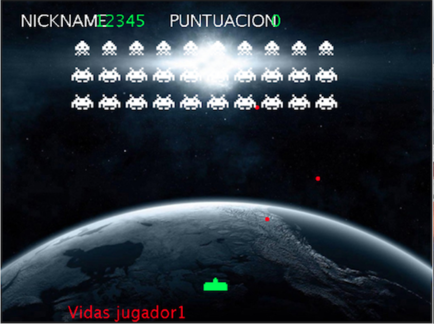
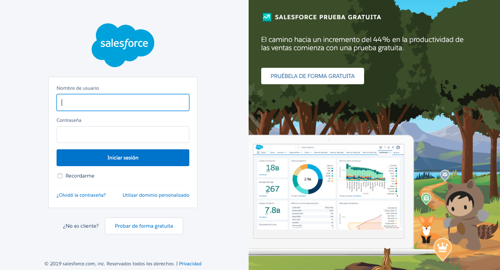
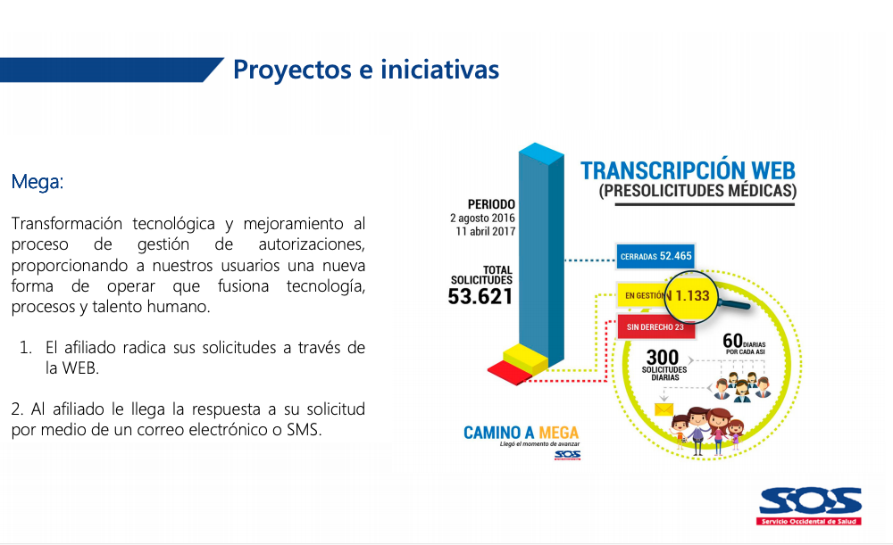
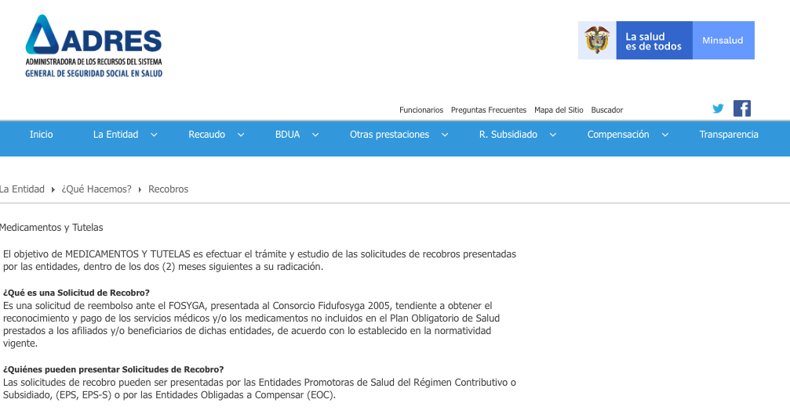
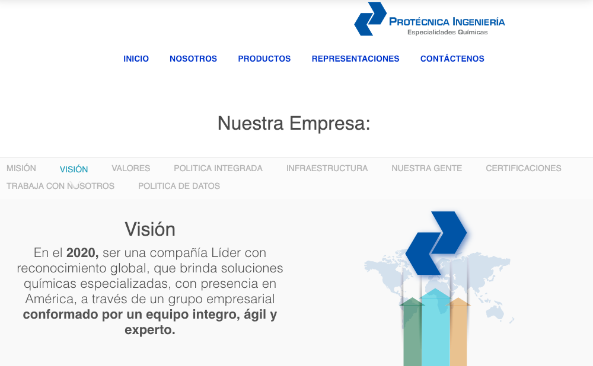
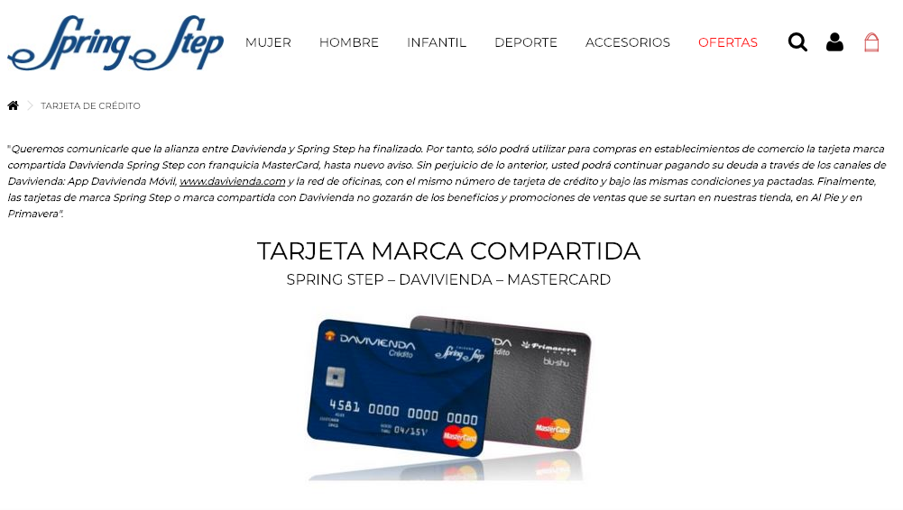
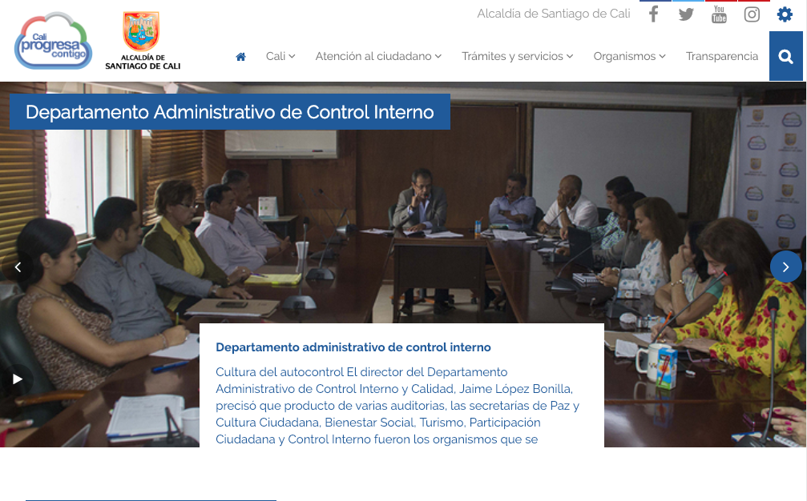

Desarrollo de Proyectos de Software - Projects Manager.
Me apasiona la tecnología.
A lo largo de los años, me he formado en diferentes áreas relacionadas con el desarrollo de software en el sector comercial, publico, industrial, salud y educación.
Soy programador Java, JavaScript, #C, Php, FoxPro, certificado por PMI en gestión de proyectos tradicionales y por ScrumStudy como Scrum Master, Especialista en Ingeniería de Software de la Pontificía Universidad Javeriana Cali.
Para un contacto directo conmigo, escríbeme a lfbenavides@gmail.com o a través de mis diferentes redes.
Mejores experiencias
Implementación de Integración continua proyecto WebStore
Como proyecto final de la asignatura Construcción y Pruebas de Software se seleccionó un proyecto alojado en GitHub y se implementó integración continua, pruebas automatizadas y análisis estático.

Implementación de patrones de diseño a un proyecto de pregrado
Como proyecto final de la asignatura Estrategias y Patrones de Diseño de Software se implementaron patrones de diseño a un proyecto de pregrado.
Integración de la bolsa de empleo de egresados con PeopleSoft (software académico)
Permite crear usuarios institucionales a la plataforma externa del empleo.

Integración CRM Sales Force con PeopleSoft (software academico)
Permite realizar seguimiento de los candidatos a admisión desde que se crea la oportunidad hasta que paga y se matricula.

Mejoramiento en la Gestión de las Autorizaciones y la Atención (MEGA)
Garantiza la gestión de las prestaciones en salud (POS, NO POS, PAC Y POS Subsidiado), optimizando el proceso de atención y disminuyendo la afluencia de usuarios en salas de atención.

Desarrollo e implementación de software para cumplir con Resolución de Ley 458 del 2013, por la cual se unifica el procedimiento de recobro ante el Fondo de Solidaridad y Garantía (Fosyga)
Cumple con Resolución de Ley 458 del 2013, por la cual se unifica el procedimiento de recobro ante el Fondo de Solidaridad y Garantía (Fosyga).

Diseño, desarrollo e implementación de software para control de órdenes de producción (ARCO)
Permite realizar seguimiento a las ordenes durante el proceso de producción.

Diseño, desarrollo y implementación de software para control y administración de tarjetas de crédito de la empresa
Permite llevar un registro de clientes de la tarjeta propia de la empresa desde su solicitud hasta la entrega.

Diseño y desarrollo de un aplicativo para la creación de los módulos de consulta, de estadísticas, de control y seguimiento, de reportes, de usuario gerencial y la modificación del módulo de recepción de quejas del software (SOFTCONTROL)
Creación de los módulos de consulta, de estadísticas, de control y seguimiento, de reportes, de usuario gerencial y la modificación del módulo de recepción de quejas del software SOFTCONTROL con la finalidad de organizar, administrar y controlar los procesos disciplinarios.
Diseño y desarrollo de software para el control de inventarios
Permite realizar una captura de datos del proceso de facturación y a partir de esta información la generación de variados informes.